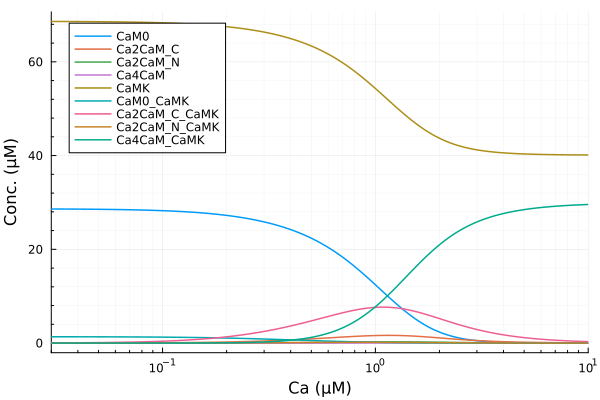
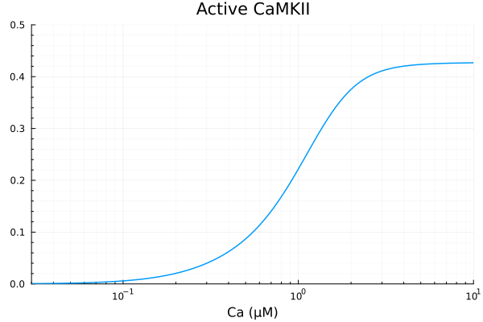
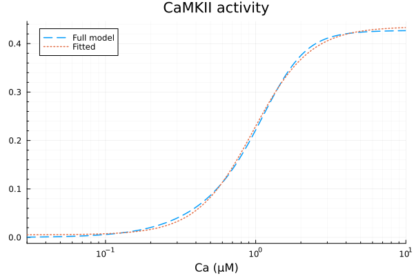
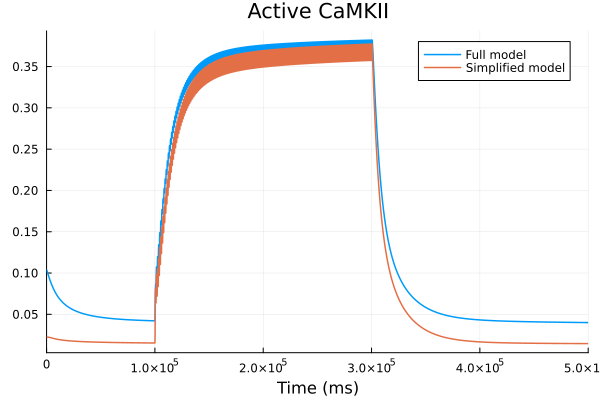
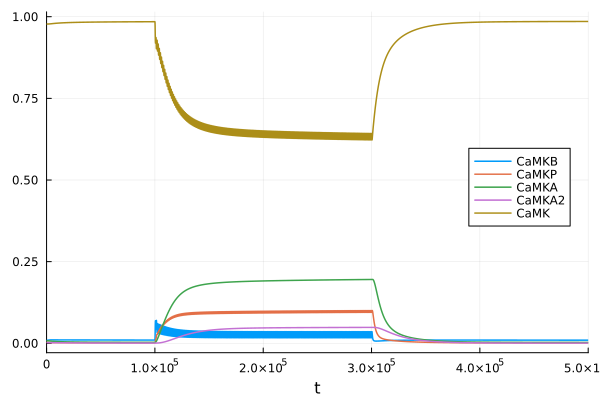
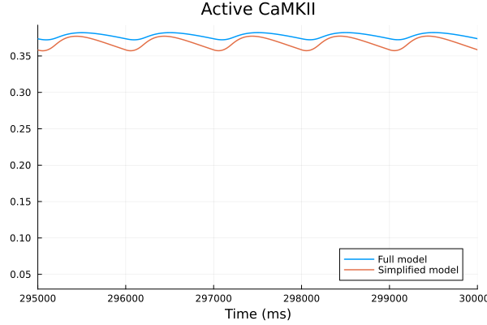

CaMKII system analysis#
using ModelingToolkit
using OrdinaryDiffEq, SteadyStateDiffEq, DiffEqCallbacks
using Plots
using LsqFit
using CaMKIIModel
using CaMKIIModel: μM, hil, second, Hz
Plots.default(lw=1.5)
CaMKII sensitivity to calcium#
Model CaM/Calcium binding only. No phosphorylation or oxidation.
@parameters Ca = 0μM ROS = 0μM
sys = get_camkii_sys(Ca; ROS, simplify=true)
\[\begin{split} \begin{align}
\frac{\mathrm{d} \mathtt{Ca2CaM\_C}\left( t \right)}{\mathrm{d}t} &= \frac{ - \mathtt{Ca}^{2} \mathtt{k\_1N\_on} \mathtt{k\_2N\_on} \mathtt{Ca2CaM\_C}\left( t \right)}{\mathtt{k\_1N\_off} + \mathtt{Ca} \mathtt{k\_2N\_on}} + \frac{\mathtt{Ca}^{2} \mathtt{k\_1C\_on} \mathtt{k\_2C\_on} \mathtt{CaM0}\left( t \right)}{\mathtt{k\_1C\_off} + \mathtt{Ca} \mathtt{k\_2C\_on}} + \mathtt{kCaM2CP\_off} \mathtt{Ca2CaM\_C\_CaMKP}\left( t \right) + \mathtt{kCaM2C\_off} \mathtt{Ca2CaM\_C\_CaMK}\left( t \right) - \mathtt{kCaM2CP\_on} \mathtt{Ca2CaM\_C}\left( t \right) \mathtt{CaMKP}\left( t \right) - \mathtt{kCaM2C\_on} \mathtt{Ca2CaM\_C}\left( t \right) \mathtt{CaMK}\left( t \right) - \mathtt{k\_2C\_off} \left( 1 + \frac{ - \mathtt{Ca} \mathtt{k\_2C\_on}}{\mathtt{k\_1C\_off} + \mathtt{Ca} \mathtt{k\_2C\_on}} \right) \mathtt{Ca2CaM\_C}\left( t \right) + \mathtt{k\_2N\_off} \left( 1 + \frac{ - \mathtt{Ca} \mathtt{k\_2N\_on}}{\mathtt{k\_1N\_off} + \mathtt{Ca} \mathtt{k\_2N\_on}} \right) \mathtt{Ca4CaM}\left( t \right) \\
\frac{\mathrm{d} \mathtt{Ca2CaM\_N}\left( t \right)}{\mathrm{d}t} &= \frac{ - \mathtt{Ca}^{2} \mathtt{k\_1C\_on} \mathtt{k\_2C\_on} \mathtt{Ca2CaM\_N}\left( t \right)}{\mathtt{k\_1C\_off} + \mathtt{Ca} \mathtt{k\_2C\_on}} + \frac{\mathtt{Ca}^{2} \mathtt{k\_1N\_on} \mathtt{k\_2N\_on} \mathtt{CaM0}\left( t \right)}{\mathtt{k\_1N\_off} + \mathtt{Ca} \mathtt{k\_2N\_on}} + \mathtt{kCaM2NP\_off} \mathtt{Ca2CaM\_N\_CaMKP}\left( t \right) + \mathtt{kCaM2N\_off} \mathtt{Ca2CaM\_N\_CaMK}\left( t \right) - \mathtt{kCaM2NP\_on} \mathtt{CaMKP}\left( t \right) \mathtt{Ca2CaM\_N}\left( t \right) - \mathtt{kCaM2N\_on} \mathtt{CaMK}\left( t \right) \mathtt{Ca2CaM\_N}\left( t \right) + \mathtt{k\_2C\_off} \left( 1 + \frac{ - \mathtt{Ca} \mathtt{k\_2C\_on}}{\mathtt{k\_1C\_off} + \mathtt{Ca} \mathtt{k\_2C\_on}} \right) \mathtt{Ca4CaM}\left( t \right) - \mathtt{k\_2N\_off} \left( 1 + \frac{ - \mathtt{Ca} \mathtt{k\_2N\_on}}{\mathtt{k\_1N\_off} + \mathtt{Ca} \mathtt{k\_2N\_on}} \right) \mathtt{Ca2CaM\_N}\left( t \right) \\
\frac{\mathrm{d} \mathtt{Ca4CaM}\left( t \right)}{\mathrm{d}t} &= \frac{\mathtt{Ca}^{2} \mathtt{k\_1C\_on} \mathtt{k\_2C\_on} \mathtt{Ca2CaM\_N}\left( t \right)}{\mathtt{k\_1C\_off} + \mathtt{Ca} \mathtt{k\_2C\_on}} + \frac{\mathtt{Ca}^{2} \mathtt{k\_1N\_on} \mathtt{k\_2N\_on} \mathtt{Ca2CaM\_C}\left( t \right)}{\mathtt{k\_1N\_off} + \mathtt{Ca} \mathtt{k\_2N\_on}} + \mathtt{kCaM4P\_off} \mathtt{Ca4CaM\_CaMKPOX}\left( t \right) + \mathtt{kCaM4P\_off} \mathtt{Ca4CaM\_CaMKP}\left( t \right) + \mathtt{kCaM4\_off} \mathtt{Ca4CaM\_CaMKOX}\left( t \right) + \mathtt{kCaM4\_off} \mathtt{Ca4CaM\_CaMK}\left( t \right) - \mathtt{kCaM4P\_on} \mathtt{CaMKPOX}\left( t \right) \mathtt{Ca4CaM}\left( t \right) - \mathtt{kCaM4P\_on} \mathtt{CaMKP}\left( t \right) \mathtt{Ca4CaM}\left( t \right) - \mathtt{kCaM4\_on} \mathtt{CaMKOX}\left( t \right) \mathtt{Ca4CaM}\left( t \right) - \mathtt{kCaM4\_on} \mathtt{CaMK}\left( t \right) \mathtt{Ca4CaM}\left( t \right) - \mathtt{k\_2C\_off} \left( 1 + \frac{ - \mathtt{Ca} \mathtt{k\_2C\_on}}{\mathtt{k\_1C\_off} + \mathtt{Ca} \mathtt{k\_2C\_on}} \right) \mathtt{Ca4CaM}\left( t \right) - \mathtt{k\_2N\_off} \left( 1 + \frac{ - \mathtt{Ca} \mathtt{k\_2N\_on}}{\mathtt{k\_1N\_off} + \mathtt{Ca} \mathtt{k\_2N\_on}} \right) \mathtt{Ca4CaM}\left( t \right) \\
\frac{\mathrm{d} \mathtt{CaM0\_CaMK}\left( t \right)}{\mathrm{d}t} &= \frac{ - \mathtt{Ca}^{2} \mathtt{k\_K1C\_on} \mathtt{k\_K2C\_on} \mathtt{CaM0\_CaMK}\left( t \right)}{\mathtt{k\_K1C\_off} + \mathtt{Ca} \mathtt{k\_K2C\_on}} + \frac{ - \mathtt{Ca}^{2} \mathtt{k\_K1N\_on} \mathtt{k\_K2N\_on} \mathtt{CaM0\_CaMK}\left( t \right)}{\mathtt{k\_K1N\_off} + \mathtt{Ca} \mathtt{k\_K2N\_on}} - \mathtt{kCaM0\_off} \mathtt{CaM0\_CaMK}\left( t \right) + \mathtt{kCaM0\_on} \mathtt{CaM0}\left( t \right) \mathtt{CaMK}\left( t \right) + \mathtt{k\_K2C\_off} \left( 1 + \frac{ - \mathtt{Ca} \mathtt{k\_K2C\_on}}{\mathtt{k\_K1C\_off} + \mathtt{Ca} \mathtt{k\_K2C\_on}} \right) \mathtt{Ca2CaM\_C\_CaMK}\left( t \right) + \mathtt{k\_K2N\_off} \mathtt{Ca2CaM\_N\_CaMK}\left( t \right) \left( 1 + \frac{ - \mathtt{Ca} \mathtt{k\_K2N\_on}}{\mathtt{k\_K1N\_off} + \mathtt{Ca} \mathtt{k\_K2N\_on}} \right) \\
\frac{\mathrm{d} \mathtt{Ca2CaM\_C\_CaMK}\left( t \right)}{\mathrm{d}t} &= \frac{ - \mathtt{Ca}^{2} \mathtt{k\_K1N\_on} \mathtt{k\_K2N\_on} \mathtt{Ca2CaM\_C\_CaMK}\left( t \right)}{\mathtt{k\_K1N\_off} + \mathtt{Ca} \mathtt{k\_K2N\_on}} + \frac{\mathtt{Ca}^{2} \mathtt{k\_K1C\_on} \mathtt{k\_K2C\_on} \mathtt{CaM0\_CaMK}\left( t \right)}{\mathtt{k\_K1C\_off} + \mathtt{Ca} \mathtt{k\_K2C\_on}} - \mathtt{kCaM2C\_off} \mathtt{Ca2CaM\_C\_CaMK}\left( t \right) + \mathtt{k\_dephospho} \mathtt{Ca2CaM\_C\_CaMKP}\left( t \right) + \mathtt{kCaM2C\_on} \mathtt{Ca2CaM\_C}\left( t \right) \mathtt{CaMK}\left( t \right) + \mathtt{k\_K2C\_off} \left( -1 + \frac{\mathtt{Ca} \mathtt{k\_K2C\_on}}{\mathtt{k\_K1C\_off} + \mathtt{Ca} \mathtt{k\_K2C\_on}} \right) \mathtt{Ca2CaM\_C\_CaMK}\left( t \right) + \mathtt{k\_K2N\_off} \mathtt{Ca4CaM\_CaMK}\left( t \right) \left( 1 + \frac{ - \mathtt{Ca} \mathtt{k\_K2N\_on}}{\mathtt{k\_K1N\_off} + \mathtt{Ca} \mathtt{k\_K2N\_on}} \right) - \mathtt{k\_phosCaM} \mathtt{CaMKAct}\left( t \right) \mathtt{Ca2CaM\_C\_CaMK}\left( t \right) \\
\frac{\mathrm{d} \mathtt{Ca2CaM\_N\_CaMK}\left( t \right)}{\mathrm{d}t} &= \frac{ - \mathtt{Ca}^{2} \mathtt{k\_K1C\_on} \mathtt{k\_K2C\_on} \mathtt{Ca2CaM\_N\_CaMK}\left( t \right)}{\mathtt{k\_K1C\_off} + \mathtt{Ca} \mathtt{k\_K2C\_on}} + \frac{\mathtt{Ca}^{2} \mathtt{k\_K1N\_on} \mathtt{k\_K2N\_on} \mathtt{CaM0\_CaMK}\left( t \right)}{\mathtt{k\_K1N\_off} + \mathtt{Ca} \mathtt{k\_K2N\_on}} - \mathtt{kCaM2N\_off} \mathtt{Ca2CaM\_N\_CaMK}\left( t \right) + \mathtt{k\_dephospho} \mathtt{Ca2CaM\_N\_CaMKP}\left( t \right) + \mathtt{kCaM2N\_on} \mathtt{CaMK}\left( t \right) \mathtt{Ca2CaM\_N}\left( t \right) + \mathtt{k\_K2C\_off} \left( 1 + \frac{ - \mathtt{Ca} \mathtt{k\_K2C\_on}}{\mathtt{k\_K1C\_off} + \mathtt{Ca} \mathtt{k\_K2C\_on}} \right) \mathtt{Ca4CaM\_CaMK}\left( t \right) + \mathtt{k\_K2N\_off} \left( -1 + \frac{\mathtt{Ca} \mathtt{k\_K2N\_on}}{\mathtt{k\_K1N\_off} + \mathtt{Ca} \mathtt{k\_K2N\_on}} \right) \mathtt{Ca2CaM\_N\_CaMK}\left( t \right) - \mathtt{k\_phosCaM} \mathtt{Ca2CaM\_N\_CaMK}\left( t \right) \mathtt{CaMKAct}\left( t \right) \\
\frac{\mathrm{d} \mathtt{Ca4CaM\_CaMK}\left( t \right)}{\mathrm{d}t} &= \frac{\mathtt{Ca}^{2} \mathtt{k\_K1N\_on} \mathtt{k\_K2N\_on} \mathtt{Ca2CaM\_C\_CaMK}\left( t \right)}{\mathtt{k\_K1N\_off} + \mathtt{Ca} \mathtt{k\_K2N\_on}} + \frac{\mathtt{Ca}^{2} \mathtt{k\_K1C\_on} \mathtt{k\_K2C\_on} \mathtt{Ca2CaM\_N\_CaMK}\left( t \right)}{\mathtt{k\_K1C\_off} + \mathtt{Ca} \mathtt{k\_K2C\_on}} - \mathtt{kCaM4\_off} \mathtt{Ca4CaM\_CaMK}\left( t \right) + \mathtt{k\_OXB} \mathtt{Ca4CaM\_CaMKOX}\left( t \right) + \mathtt{k\_dephospho} \mathtt{Ca4CaM\_CaMKP}\left( t \right) - \mathtt{ROS} \mathtt{k\_BOX} \mathtt{Ca4CaM\_CaMK}\left( t \right) + \mathtt{kCaM4\_on} \mathtt{CaMK}\left( t \right) \mathtt{Ca4CaM}\left( t \right) + \mathtt{k\_K2C\_off} \mathtt{Ca4CaM\_CaMK}\left( t \right) \left( -1 + \frac{\mathtt{Ca} \mathtt{k\_K2C\_on}}{\mathtt{k\_K1C\_off} + \mathtt{Ca} \mathtt{k\_K2C\_on}} \right) + \mathtt{k\_K2N\_off} \mathtt{Ca4CaM\_CaMK}\left( t \right) \left( -1 + \frac{\mathtt{Ca} \mathtt{k\_K2N\_on}}{\mathtt{k\_K1N\_off} + \mathtt{Ca} \mathtt{k\_K2N\_on}} \right) - \mathtt{k\_phosCaM} \mathtt{Ca4CaM\_CaMK}\left( t \right) \mathtt{CaMKAct}\left( t \right) \\
\frac{\mathrm{d} \mathtt{CaM0\_CaMKP}\left( t \right)}{\mathrm{d}t} &= \frac{ - \mathtt{Ca}^{2} \mathtt{k\_K1C\_on} \mathtt{k\_K2C\_on} \mathtt{CaM0\_CaMKP}\left( t \right)}{\mathtt{k\_K1C\_off} + \mathtt{Ca} \mathtt{k\_K2C\_on}} + \frac{ - \mathtt{Ca}^{2} \mathtt{k\_K1N\_on} \mathtt{k\_K2N\_on} \mathtt{CaM0\_CaMKP}\left( t \right)}{\mathtt{k\_K1N\_off} + \mathtt{Ca} \mathtt{k\_K2N\_on}} - \mathtt{kCaM0P\_off} \mathtt{CaM0\_CaMKP}\left( t \right) + \mathtt{kCaM0P\_on} \mathtt{CaM0}\left( t \right) \mathtt{CaMKP}\left( t \right) + \mathtt{k\_K2C\_off} \left( 1 + \frac{ - \mathtt{Ca} \mathtt{k\_K2C\_on}}{\mathtt{k\_K1C\_off} + \mathtt{Ca} \mathtt{k\_K2C\_on}} \right) \mathtt{Ca2CaM\_C\_CaMKP}\left( t \right) + \mathtt{k\_K2N\_off} \mathtt{Ca2CaM\_N\_CaMKP}\left( t \right) \left( 1 + \frac{ - \mathtt{Ca} \mathtt{k\_K2N\_on}}{\mathtt{k\_K1N\_off} + \mathtt{Ca} \mathtt{k\_K2N\_on}} \right) \\
\frac{\mathrm{d} \mathtt{Ca2CaM\_C\_CaMKP}\left( t \right)}{\mathrm{d}t} &= \frac{\mathtt{Ca}^{2} \mathtt{k\_K1C\_on} \mathtt{k\_K2C\_on} \mathtt{CaM0\_CaMKP}\left( t \right)}{\mathtt{k\_K1C\_off} + \mathtt{Ca} \mathtt{k\_K2C\_on}} + \frac{ - \mathtt{Ca}^{2} \mathtt{k\_K1N\_on} \mathtt{k\_K2N\_on} \mathtt{Ca2CaM\_C\_CaMKP}\left( t \right)}{\mathtt{k\_K1N\_off} + \mathtt{Ca} \mathtt{k\_K2N\_on}} - \mathtt{kCaM2CP\_off} \mathtt{Ca2CaM\_C\_CaMKP}\left( t \right) - \mathtt{k\_dephospho} \mathtt{Ca2CaM\_C\_CaMKP}\left( t \right) + \mathtt{kCaM2CP\_on} \mathtt{Ca2CaM\_C}\left( t \right) \mathtt{CaMKP}\left( t \right) + \mathtt{k\_K2C\_off} \mathtt{Ca2CaM\_C\_CaMKP}\left( t \right) \left( -1 + \frac{\mathtt{Ca} \mathtt{k\_K2C\_on}}{\mathtt{k\_K1C\_off} + \mathtt{Ca} \mathtt{k\_K2C\_on}} \right) + \mathtt{k\_K2N\_off} \mathtt{Ca4CaM\_CaMKP}\left( t \right) \left( 1 + \frac{ - \mathtt{Ca} \mathtt{k\_K2N\_on}}{\mathtt{k\_K1N\_off} + \mathtt{Ca} \mathtt{k\_K2N\_on}} \right) + \mathtt{k\_phosCaM} \mathtt{CaMKAct}\left( t \right) \mathtt{Ca2CaM\_C\_CaMK}\left( t \right) \\
\frac{\mathrm{d} \mathtt{Ca2CaM\_N\_CaMKP}\left( t \right)}{\mathrm{d}t} &= \frac{ - \mathtt{Ca}^{2} \mathtt{k\_K1C\_on} \mathtt{k\_K2C\_on} \mathtt{Ca2CaM\_N\_CaMKP}\left( t \right)}{\mathtt{k\_K1C\_off} + \mathtt{Ca} \mathtt{k\_K2C\_on}} + \frac{\mathtt{Ca}^{2} \mathtt{k\_K1N\_on} \mathtt{k\_K2N\_on} \mathtt{CaM0\_CaMKP}\left( t \right)}{\mathtt{k\_K1N\_off} + \mathtt{Ca} \mathtt{k\_K2N\_on}} - \mathtt{kCaM2NP\_off} \mathtt{Ca2CaM\_N\_CaMKP}\left( t \right) - \mathtt{k\_dephospho} \mathtt{Ca2CaM\_N\_CaMKP}\left( t \right) + \mathtt{kCaM2NP\_on} \mathtt{CaMKP}\left( t \right) \mathtt{Ca2CaM\_N}\left( t \right) + \mathtt{k\_K2C\_off} \left( 1 + \frac{ - \mathtt{Ca} \mathtt{k\_K2C\_on}}{\mathtt{k\_K1C\_off} + \mathtt{Ca} \mathtt{k\_K2C\_on}} \right) \mathtt{Ca4CaM\_CaMKP}\left( t \right) - \mathtt{k\_K2N\_off} \mathtt{Ca2CaM\_N\_CaMKP}\left( t \right) \left( 1 + \frac{ - \mathtt{Ca} \mathtt{k\_K2N\_on}}{\mathtt{k\_K1N\_off} + \mathtt{Ca} \mathtt{k\_K2N\_on}} \right) + \mathtt{k\_phosCaM} \mathtt{Ca2CaM\_N\_CaMK}\left( t \right) \mathtt{CaMKAct}\left( t \right) \\
\frac{\mathrm{d} \mathtt{Ca4CaM\_CaMKP}\left( t \right)}{\mathrm{d}t} &= \frac{\mathtt{Ca}^{2} \mathtt{k\_K1N\_on} \mathtt{k\_K2N\_on} \mathtt{Ca2CaM\_C\_CaMKP}\left( t \right)}{\mathtt{k\_K1N\_off} + \mathtt{Ca} \mathtt{k\_K2N\_on}} + \frac{\mathtt{Ca}^{2} \mathtt{k\_K1C\_on} \mathtt{k\_K2C\_on} \mathtt{Ca2CaM\_N\_CaMKP}\left( t \right)}{\mathtt{k\_K1C\_off} + \mathtt{Ca} \mathtt{k\_K2C\_on}} - \mathtt{kCaM4P\_off} \mathtt{Ca4CaM\_CaMKP}\left( t \right) + \mathtt{k\_OXPP} \mathtt{Ca4CaM\_CaMKPOX}\left( t \right) - \mathtt{k\_dephospho} \mathtt{Ca4CaM\_CaMKP}\left( t \right) - \mathtt{ROS} \mathtt{k\_POXP} \mathtt{Ca4CaM\_CaMKP}\left( t \right) + \mathtt{kCaM4P\_on} \mathtt{CaMKP}\left( t \right) \mathtt{Ca4CaM}\left( t \right) + \mathtt{k\_K2C\_off} \mathtt{Ca4CaM\_CaMKP}\left( t \right) \left( -1 + \frac{\mathtt{Ca} \mathtt{k\_K2C\_on}}{\mathtt{k\_K1C\_off} + \mathtt{Ca} \mathtt{k\_K2C\_on}} \right) + \mathtt{k\_K2N\_off} \mathtt{Ca4CaM\_CaMKP}\left( t \right) \left( -1 + \frac{\mathtt{Ca} \mathtt{k\_K2N\_on}}{\mathtt{k\_K1N\_off} + \mathtt{Ca} \mathtt{k\_K2N\_on}} \right) + \mathtt{k\_phosCaM} \mathtt{Ca4CaM\_CaMK}\left( t \right) \mathtt{CaMKAct}\left( t \right) \\
\frac{\mathrm{d} \mathtt{Ca4CaM\_CaMKOX}\left( t \right)}{\mathrm{d}t} &= - \mathtt{kCaM4\_off} \mathtt{Ca4CaM\_CaMKOX}\left( t \right) - \mathtt{k\_OXB} \mathtt{Ca4CaM\_CaMKOX}\left( t \right) + \mathtt{k\_dephospho} \mathtt{Ca4CaM\_CaMKPOX}\left( t \right) + \mathtt{ROS} \mathtt{k\_BOX} \mathtt{Ca4CaM\_CaMK}\left( t \right) + \mathtt{kCaM4\_on} \mathtt{CaMKOX}\left( t \right) \mathtt{Ca4CaM}\left( t \right) - \mathtt{k\_phosCaM} \mathtt{Ca4CaM\_CaMKOX}\left( t \right) \mathtt{CaMKAct}\left( t \right) \\
\frac{\mathrm{d} \mathtt{Ca4CaM\_CaMKPOX}\left( t \right)}{\mathrm{d}t} &= - \mathtt{kCaM4P\_off} \mathtt{Ca4CaM\_CaMKPOX}\left( t \right) - \mathtt{k\_OXPP} \mathtt{Ca4CaM\_CaMKPOX}\left( t \right) - \mathtt{k\_dephospho} \mathtt{Ca4CaM\_CaMKPOX}\left( t \right) + \mathtt{ROS} \mathtt{k\_POXP} \mathtt{Ca4CaM\_CaMKP}\left( t \right) + \mathtt{kCaM4P\_on} \mathtt{CaMKPOX}\left( t \right) \mathtt{Ca4CaM}\left( t \right) + \mathtt{k\_phosCaM} \mathtt{Ca4CaM\_CaMKOX}\left( t \right) \mathtt{CaMKAct}\left( t \right) \\
\frac{\mathrm{d} \mathtt{CaMKP}\left( t \right)}{\mathrm{d}t} &= \mathtt{kCaM0P\_off} \mathtt{CaM0\_CaMKP}\left( t \right) + \mathtt{kCaM2CP\_off} \mathtt{Ca2CaM\_C\_CaMKP}\left( t \right) + \mathtt{kCaM2NP\_off} \mathtt{Ca2CaM\_N\_CaMKP}\left( t \right) + \mathtt{kCaM4P\_off} \mathtt{Ca4CaM\_CaMKP}\left( t \right) + \mathtt{k\_OXPP} \mathtt{CaMKPOX}\left( t \right) - \mathtt{k\_P1\_P2} \mathtt{CaMKP}\left( t \right) + \mathtt{k\_P2\_P1} \mathtt{CaMKP2}\left( t \right) - \mathtt{k\_dephospho} \mathtt{CaMKP}\left( t \right) - \mathtt{kCaM0P\_on} \mathtt{CaM0}\left( t \right) \mathtt{CaMKP}\left( t \right) - \mathtt{kCaM2CP\_on} \mathtt{Ca2CaM\_C}\left( t \right) \mathtt{CaMKP}\left( t \right) - \mathtt{kCaM2NP\_on} \mathtt{CaMKP}\left( t \right) \mathtt{Ca2CaM\_N}\left( t \right) - \mathtt{kCaM4P\_on} \mathtt{CaMKP}\left( t \right) \mathtt{Ca4CaM}\left( t \right) \\
\frac{\mathrm{d} \mathtt{CaMKP2}\left( t \right)}{\mathrm{d}t} &= \mathtt{k\_P1\_P2} \mathtt{CaMKP}\left( t \right) - \mathtt{k\_P2\_P1} \mathtt{CaMKP2}\left( t \right) \\
\frac{\mathrm{d} \mathtt{CaMKPOX}\left( t \right)}{\mathrm{d}t} &= \mathtt{kCaM4P\_off} \mathtt{Ca4CaM\_CaMKPOX}\left( t \right) - \mathtt{k\_OXPP} \mathtt{CaMKPOX}\left( t \right) - \mathtt{k\_dephospho} \mathtt{CaMKPOX}\left( t \right) - \mathtt{kCaM4P\_on} \mathtt{CaMKPOX}\left( t \right) \mathtt{Ca4CaM}\left( t \right) \\
\frac{\mathrm{d} \mathtt{CaMKOX}\left( t \right)}{\mathrm{d}t} &= \mathtt{kCaM4\_off} \mathtt{Ca4CaM\_CaMKOX}\left( t \right) - \mathtt{k\_OXB} \mathtt{CaMKOX}\left( t \right) + \mathtt{k\_dephospho} \mathtt{CaMKPOX}\left( t \right) - \mathtt{kCaM4\_on} \mathtt{CaMKOX}\left( t \right) \mathtt{Ca4CaM}\left( t \right)
\end{align}
\end{split}\]
prob = SteadyStateProblem(sys, [sys.k_phosCaM => 0])
alg = DynamicSS(Rodas5P())
ca = exp10.(range(log10(0.03μM), log10(10μM), 1001))
prob_func = (prob, i, repeat) -> begin
remake(prob, p=[Ca => ca[i]])
end
trajectories = length(ca)
sol0 = solve(prob, alg; abstol=1e-10, reltol=1e-10) ## warmup
sim = solve(EnsembleProblem(prob; prob_func, safetycopy=false), alg; trajectories, abstol=1e-10, reltol=1e-10)
EnsembleSolution Solution of length 1001 with uType:
SciMLBase.NonlinearSolution{Float64, 1, Vector{Float64}, Vector{Float64}, SciMLBase.SteadyStateProblem{Vector{Float64}, true, ModelingToolkit.MTKParameters{Vector{Float64}, Vector{Float64}, Tuple{}, Tuple{}, Tuple{}, Tuple{}}, SciMLBase.ODEFunction{true, SciMLBase.AutoSpecialize, ModelingToolkit.GeneratedFunctionWrapper{(2, 3, true), RuntimeGeneratedFunctions.RuntimeGeneratedFunction{(:__mtk_arg_1, :___mtkparameters___, :t), ModelingToolkit.var"#_RGF_ModTag", ModelingToolkit.var"#_RGF_ModTag", (0x57e65267, 0x0da70c6f, 0xa1146a00, 0x48f08f41, 0xc064fda9), Nothing}, RuntimeGeneratedFunctions.RuntimeGeneratedFunction{(:ˍ₋out, :__mtk_arg_1, :___mtkparameters___, :t), ModelingToolkit.var"#_RGF_ModTag", ModelingToolkit.var"#_RGF_ModTag", (0xcd706e2f, 0x88a68fe7, 0x2a5f60f5, 0xd960013d, 0x1e3f7725), Nothing}}, LinearAlgebra.UniformScaling{Bool}, Nothing, Nothing, Nothing, Nothing, Nothing, Nothing, Nothing, Nothing, Nothing, Nothing, Nothing, ModelingToolkit.ObservedFunctionCache{ModelingToolkit.ODESystem}, Nothing, ModelingToolkit.ODESystem, SciMLBase.OverrideInitData{SciMLBase.NonlinearProblem{Nothing, true, ModelingToolkit.MTKParameters{Vector{Float64}, StaticArraysCore.SizedVector{0, Float64, Vector{Float64}}, Tuple{}, Tuple{}, Tuple{}, Tuple{}}, SciMLBase.NonlinearFunction{true, SciMLBase.FullSpecialize, ModelingToolkit.GeneratedFunctionWrapper{(2, 2, true), RuntimeGeneratedFunctions.RuntimeGeneratedFunction{(:__mtk_arg_1, :___mtkparameters___), ModelingToolkit.var"#_RGF_ModTag", ModelingToolkit.var"#_RGF_ModTag", (0xaf4a1a0e, 0x9397bcf0, 0x24729aaf, 0x972d96f2, 0x8dc45ab8), Nothing}, RuntimeGeneratedFunctions.RuntimeGeneratedFunction{(:ˍ₋out, :__mtk_arg_1, :___mtkparameters___), ModelingToolkit.var"#_RGF_ModTag", ModelingToolkit.var"#_RGF_ModTag", (0xb49e3b77, 0x9eef1ec0, 0x2f0bd1a2, 0x352b1bb8, 0x783d8810), Nothing}}, LinearAlgebra.UniformScaling{Bool}, Nothing, Nothing, Nothing, Nothing, Nothing, Nothing, Nothing, Nothing, Nothing, Nothing, ModelingToolkit.ObservedFunctionCache{ModelingToolkit.NonlinearSystem}, Nothing, ModelingToolkit.NonlinearSystem, Nothing, Nothing}, Base.Pairs{Symbol, Union{}, Tuple{}, @NamedTuple{}}, ModelingToolkit.InitializationSystemMetadata}, ModelingToolkit.UpdateInitializeprob{SymbolicIndexingInterface.MultipleParametersGetter{SymbolicIndexingInterface.IndexerNotTimeseries, Vector{SymbolicIndexingInterface.GetParameterIndex}, Nothing}, SymbolicIndexingInterface.MultipleSetters{Vector{SymbolicIndexingInterface.ParameterHookWrapper{SymbolicIndexingInterface.SetParameterIndex{ModelingToolkit.ParameterIndex{SciMLStructures.Tunable, Int64}}, SymbolicUtils.BasicSymbolic{Real}}}}}, ComposedFunction{typeof(identity), SymbolicIndexingInterface.TimeIndependentObservedFunction{ModelingToolkit.GeneratedFunctionWrapper{(2, 2, true), RuntimeGeneratedFunctions.RuntimeGeneratedFunction{(:__mtk_arg_1, :___mtkparameters___), ModelingToolkit.var"#_RGF_ModTag", ModelingToolkit.var"#_RGF_ModTag", (0x1c982f78, 0xc61e1e4f, 0xc30e4e13, 0xed3d5e78, 0xd208e516), Nothing}, RuntimeGeneratedFunctions.RuntimeGeneratedFunction{(:ˍ₋out, :__mtk_arg_1, :___mtkparameters___), ModelingToolkit.var"#_RGF_ModTag", ModelingToolkit.var"#_RGF_ModTag", (0x6b12abb2, 0x5ab2e0fa, 0x9ad8cf19, 0x7447a88e, 0x2c406501), Nothing}}}}, Nothing}, Nothing}, Base.Pairs{Symbol, Union{}, Tuple{}, @NamedTuple{}}}, SteadyStateDiffEq.DynamicSS{OrdinaryDiffEqRosenbrock.Rodas5P{9, ADTypes.AutoForwardDiff{9, Nothing}, Nothing, typeof(OrdinaryDiffEqCore.DEFAULT_PRECS), Val{:forward}(), true, nothing, typeof(OrdinaryDiffEqCore.trivial_limiter!), typeof(OrdinaryDiffEqCore.trivial_limiter!)}, Float64}, SciMLBase.ODESolution{Float64, 2, Vector{Vector{Float64}}, Nothing, Nothing, Vector{Float64}, Vector{Vector{Vector{Float64}}}, Nothing, SciMLBase.ODEProblem{Vector{Float64}, Tuple{Float64, Float64}, true, ModelingToolkit.MTKParameters{Vector{Float64}, Vector{Float64}, Tuple{}, Tuple{}, Tuple{}, Tuple{}}, SciMLBase.ODEFunction{true, true, SciMLBase.ODEFunction{true, SciMLBase.AutoSpecialize, ModelingToolkit.GeneratedFunctionWrapper{(2, 3, true), RuntimeGeneratedFunctions.RuntimeGeneratedFunction{(:__mtk_arg_1, :___mtkparameters___, :t), ModelingToolkit.var"#_RGF_ModTag", ModelingToolkit.var"#_RGF_ModTag", (0x57e65267, 0x0da70c6f, 0xa1146a00, 0x48f08f41, 0xc064fda9), Nothing}, RuntimeGeneratedFunctions.RuntimeGeneratedFunction{(:ˍ₋out, :__mtk_arg_1, :___mtkparameters___, :t), ModelingToolkit.var"#_RGF_ModTag", ModelingToolkit.var"#_RGF_ModTag", (0xcd706e2f, 0x88a68fe7, 0x2a5f60f5, 0xd960013d, 0x1e3f7725), Nothing}}, LinearAlgebra.UniformScaling{Bool}, Nothing, Nothing, Nothing, Nothing, Nothing, Nothing, Nothing, Nothing, Nothing, Nothing, Nothing, ModelingToolkit.ObservedFunctionCache{ModelingToolkit.ODESystem}, Nothing, ModelingToolkit.ODESystem, SciMLBase.OverrideInitData{SciMLBase.NonlinearProblem{Nothing, true, ModelingToolkit.MTKParameters{Vector{Float64}, StaticArraysCore.SizedVector{0, Float64, Vector{Float64}}, Tuple{}, Tuple{}, Tuple{}, Tuple{}}, SciMLBase.NonlinearFunction{true, SciMLBase.FullSpecialize, ModelingToolkit.GeneratedFunctionWrapper{(2, 2, true), RuntimeGeneratedFunctions.RuntimeGeneratedFunction{(:__mtk_arg_1, :___mtkparameters___), ModelingToolkit.var"#_RGF_ModTag", ModelingToolkit.var"#_RGF_ModTag", (0xaf4a1a0e, 0x9397bcf0, 0x24729aaf, 0x972d96f2, 0x8dc45ab8), Nothing}, RuntimeGeneratedFunctions.RuntimeGeneratedFunction{(:ˍ₋out, :__mtk_arg_1, :___mtkparameters___), ModelingToolkit.var"#_RGF_ModTag", ModelingToolkit.var"#_RGF_ModTag", (0xb49e3b77, 0x9eef1ec0, 0x2f0bd1a2, 0x352b1bb8, 0x783d8810), Nothing}}, LinearAlgebra.UniformScaling{Bool}, Nothing, Nothing, Nothing, Nothing, Nothing, Nothing, Nothing, Nothing, Nothing, Nothing, ModelingToolkit.ObservedFunctionCache{ModelingToolkit.NonlinearSystem}, Nothing, ModelingToolkit.NonlinearSystem, Nothing, Nothing}, Base.Pairs{Symbol, Union{}, Tuple{}, @NamedTuple{}}, ModelingToolkit.InitializationSystemMetadata}, ModelingToolkit.UpdateInitializeprob{SymbolicIndexingInterface.MultipleParametersGetter{SymbolicIndexingInterface.IndexerNotTimeseries, Vector{SymbolicIndexingInterface.GetParameterIndex}, Nothing}, SymbolicIndexingInterface.MultipleSetters{Vector{SymbolicIndexingInterface.ParameterHookWrapper{SymbolicIndexingInterface.SetParameterIndex{ModelingToolkit.ParameterIndex{SciMLStructures.Tunable, Int64}}, SymbolicUtils.BasicSymbolic{Real}}}}}, ComposedFunction{typeof(identity), SymbolicIndexingInterface.TimeIndependentObservedFunction{ModelingToolkit.GeneratedFunctionWrapper{(2, 2, true), RuntimeGeneratedFunctions.RuntimeGeneratedFunction{(:__mtk_arg_1, :___mtkparameters___), ModelingToolkit.var"#_RGF_ModTag", ModelingToolkit.var"#_RGF_ModTag", (0x1c982f78, 0xc61e1e4f, 0xc30e4e13, 0xed3d5e78, 0xd208e516), Nothing}, RuntimeGeneratedFunctions.RuntimeGeneratedFunction{(:ˍ₋out, :__mtk_arg_1, :___mtkparameters___), ModelingToolkit.var"#_RGF_ModTag", ModelingToolkit.var"#_RGF_ModTag", (0x6b12abb2, 0x5ab2e0fa, 0x9ad8cf19, 0x7447a88e, 0x2c406501), Nothing}}}}, Nothing}, Nothing}, LinearAlgebra.UniformScaling{Bool}, Nothing, Nothing, Nothing, Nothing, Nothing, Nothing, Nothing, Nothing, Nothing, Nothing, Nothing, ModelingToolkit.ObservedFunctionCache{ModelingToolkit.ODESystem}, Nothing, ModelingToolkit.ODESystem, SciMLBase.OverrideInitData{SciMLBase.NonlinearProblem{Nothing, true, ModelingToolkit.MTKParameters{Vector{Float64}, StaticArraysCore.SizedVector{0, Float64, Vector{Float64}}, Tuple{}, Tuple{}, Tuple{}, Tuple{}}, SciMLBase.NonlinearFunction{true, SciMLBase.FullSpecialize, ModelingToolkit.GeneratedFunctionWrapper{(2, 2, true), RuntimeGeneratedFunctions.RuntimeGeneratedFunction{(:__mtk_arg_1, :___mtkparameters___), ModelingToolkit.var"#_RGF_ModTag", ModelingToolkit.var"#_RGF_ModTag", (0xaf4a1a0e, 0x9397bcf0, 0x24729aaf, 0x972d96f2, 0x8dc45ab8), Nothing}, RuntimeGeneratedFunctions.RuntimeGeneratedFunction{(:ˍ₋out, :__mtk_arg_1, :___mtkparameters___), ModelingToolkit.var"#_RGF_ModTag", ModelingToolkit.var"#_RGF_ModTag", (0xb49e3b77, 0x9eef1ec0, 0x2f0bd1a2, 0x352b1bb8, 0x783d8810), Nothing}}, LinearAlgebra.UniformScaling{Bool}, Nothing, Nothing, Nothing, Nothing, Nothing, Nothing, Nothing, Nothing, Nothing, Nothing, ModelingToolkit.ObservedFunctionCache{ModelingToolkit.NonlinearSystem}, Nothing, ModelingToolkit.NonlinearSystem, Nothing, Nothing}, Base.Pairs{Symbol, Union{}, Tuple{}, @NamedTuple{}}, ModelingToolkit.InitializationSystemMetadata}, ModelingToolkit.UpdateInitializeprob{SymbolicIndexingInterface.MultipleParametersGetter{SymbolicIndexingInterface.IndexerNotTimeseries, Vector{SymbolicIndexingInterface.GetParameterIndex}, Nothing}, SymbolicIndexingInterface.MultipleSetters{Vector{SymbolicIndexingInterface.ParameterHookWrapper{SymbolicIndexingInterface.SetParameterIndex{ModelingToolkit.ParameterIndex{SciMLStructures.Tunable, Int64}}, SymbolicUtils.BasicSymbolic{Real}}}}}, ComposedFunction{typeof(identity), SymbolicIndexingInterface.TimeIndependentObservedFunction{ModelingToolkit.GeneratedFunctionWrapper{(2, 2, true), RuntimeGeneratedFunctions.RuntimeGeneratedFunction{(:__mtk_arg_1, :___mtkparameters___), ModelingToolkit.var"#_RGF_ModTag", ModelingToolkit.var"#_RGF_ModTag", (0x1c982f78, 0xc61e1e4f, 0xc30e4e13, 0xed3d5e78, 0xd208e516), Nothing}, RuntimeGeneratedFunctions.RuntimeGeneratedFunction{(:ˍ₋out, :__mtk_arg_1, :___mtkparameters___), ModelingToolkit.var"#_RGF_ModTag", ModelingToolkit.var"#_RGF_ModTag", (0x6b12abb2, 0x5ab2e0fa, 0x9ad8cf19, 0x7447a88e, 0x2c406501), Nothing}}}}, Nothing}, Nothing}, Base.Pairs{Symbol, Union{}, Tuple{}, @NamedTuple{}}, SciMLBase.StandardODEProblem}, OrdinaryDiffEqRosenbrock.Rodas5P{9, ADTypes.AutoForwardDiff{9, Nothing}, Nothing, typeof(OrdinaryDiffEqCore.DEFAULT_PRECS), Val{:forward}(), true, nothing, typeof(OrdinaryDiffEqCore.trivial_limiter!), typeof(OrdinaryDiffEqCore.trivial_limiter!)}, OrdinaryDiffEqCore.InterpolationData{SciMLBase.ODEFunction{true, true, SciMLBase.ODEFunction{true, SciMLBase.AutoSpecialize, ModelingToolkit.GeneratedFunctionWrapper{(2, 3, true), RuntimeGeneratedFunctions.RuntimeGeneratedFunction{(:__mtk_arg_1, :___mtkparameters___, :t), ModelingToolkit.var"#_RGF_ModTag", ModelingToolkit.var"#_RGF_ModTag", (0x57e65267, 0x0da70c6f, 0xa1146a00, 0x48f08f41, 0xc064fda9), Nothing}, RuntimeGeneratedFunctions.RuntimeGeneratedFunction{(:ˍ₋out, :__mtk_arg_1, :___mtkparameters___, :t), ModelingToolkit.var"#_RGF_ModTag", ModelingToolkit.var"#_RGF_ModTag", (0xcd706e2f, 0x88a68fe7, 0x2a5f60f5, 0xd960013d, 0x1e3f7725), Nothing}}, LinearAlgebra.UniformScaling{Bool}, Nothing, Nothing, Nothing, Nothing, Nothing, Nothing, Nothing, Nothing, Nothing, Nothing, Nothing, ModelingToolkit.ObservedFunctionCache{ModelingToolkit.ODESystem}, Nothing, ModelingToolkit.ODESystem, SciMLBase.OverrideInitData{SciMLBase.NonlinearProblem{Nothing, true, ModelingToolkit.MTKParameters{Vector{Float64}, StaticArraysCore.SizedVector{0, Float64, Vector{Float64}}, Tuple{}, Tuple{}, Tuple{}, Tuple{}}, SciMLBase.NonlinearFunction{true, SciMLBase.FullSpecialize, ModelingToolkit.GeneratedFunctionWrapper{(2, 2, true), RuntimeGeneratedFunctions.RuntimeGeneratedFunction{(:__mtk_arg_1, :___mtkparameters___), ModelingToolkit.var"#_RGF_ModTag", ModelingToolkit.var"#_RGF_ModTag", (0xaf4a1a0e, 0x9397bcf0, 0x24729aaf, 0x972d96f2, 0x8dc45ab8), Nothing}, RuntimeGeneratedFunctions.RuntimeGeneratedFunction{(:ˍ₋out, :__mtk_arg_1, :___mtkparameters___), ModelingToolkit.var"#_RGF_ModTag", ModelingToolkit.var"#_RGF_ModTag", (0xb49e3b77, 0x9eef1ec0, 0x2f0bd1a2, 0x352b1bb8, 0x783d8810), Nothing}}, LinearAlgebra.UniformScaling{Bool}, Nothing, Nothing, Nothing, Nothing, Nothing, Nothing, Nothing, Nothing, Nothing, Nothing, ModelingToolkit.ObservedFunctionCache{ModelingToolkit.NonlinearSystem}, Nothing, ModelingToolkit.NonlinearSystem, Nothing, Nothing}, Base.Pairs{Symbol, Union{}, Tuple{}, @NamedTuple{}}, ModelingToolkit.InitializationSystemMetadata}, ModelingToolkit.UpdateInitializeprob{SymbolicIndexingInterface.MultipleParametersGetter{SymbolicIndexingInterface.IndexerNotTimeseries, Vector{SymbolicIndexingInterface.GetParameterIndex}, Nothing}, SymbolicIndexingInterface.MultipleSetters{Vector{SymbolicIndexingInterface.ParameterHookWrapper{SymbolicIndexingInterface.SetParameterIndex{ModelingToolkit.ParameterIndex{SciMLStructures.Tunable, Int64}}, SymbolicUtils.BasicSymbolic{Real}}}}}, ComposedFunction{typeof(identity), SymbolicIndexingInterface.TimeIndependentObservedFunction{ModelingToolkit.GeneratedFunctionWrapper{(2, 2, true), RuntimeGeneratedFunctions.RuntimeGeneratedFunction{(:__mtk_arg_1, :___mtkparameters___), ModelingToolkit.var"#_RGF_ModTag", ModelingToolkit.var"#_RGF_ModTag", (0x1c982f78, 0xc61e1e4f, 0xc30e4e13, 0xed3d5e78, 0xd208e516), Nothing}, RuntimeGeneratedFunctions.RuntimeGeneratedFunction{(:ˍ₋out, :__mtk_arg_1, :___mtkparameters___), ModelingToolkit.var"#_RGF_ModTag", ModelingToolkit.var"#_RGF_ModTag", (0x6b12abb2, 0x5ab2e0fa, 0x9ad8cf19, 0x7447a88e, 0x2c406501), Nothing}}}}, Nothing}, Nothing}, LinearAlgebra.UniformScaling{Bool}, Nothing, Nothing, Nothing, Nothing, Nothing, Nothing, Nothing, Nothing, Nothing, Nothing, Nothing, ModelingToolkit.ObservedFunctionCache{ModelingToolkit.ODESystem}, Nothing, ModelingToolkit.ODESystem, SciMLBase.OverrideInitData{SciMLBase.NonlinearProblem{Nothing, true, ModelingToolkit.MTKParameters{Vector{Float64}, StaticArraysCore.SizedVector{0, Float64, Vector{Float64}}, Tuple{}, Tuple{}, Tuple{}, Tuple{}}, SciMLBase.NonlinearFunction{true, SciMLBase.FullSpecialize, ModelingToolkit.GeneratedFunctionWrapper{(2, 2, true), RuntimeGeneratedFunctions.RuntimeGeneratedFunction{(:__mtk_arg_1, :___mtkparameters___), ModelingToolkit.var"#_RGF_ModTag", ModelingToolkit.var"#_RGF_ModTag", (0xaf4a1a0e, 0x9397bcf0, 0x24729aaf, 0x972d96f2, 0x8dc45ab8), Nothing}, RuntimeGeneratedFunctions.RuntimeGeneratedFunction{(:ˍ₋out, :__mtk_arg_1, :___mtkparameters___), ModelingToolkit.var"#_RGF_ModTag", ModelingToolkit.var"#_RGF_ModTag", (0xb49e3b77, 0x9eef1ec0, 0x2f0bd1a2, 0x352b1bb8, 0x783d8810), Nothing}}, LinearAlgebra.UniformScaling{Bool}, Nothing, Nothing, Nothing, Nothing, Nothing, Nothing, Nothing, Nothing, Nothing, Nothing, ModelingToolkit.ObservedFunctionCache{ModelingToolkit.NonlinearSystem}, Nothing, ModelingToolkit.NonlinearSystem, Nothing, Nothing}, Base.Pairs{Symbol, Union{}, Tuple{}, @NamedTuple{}}, ModelingToolkit.InitializationSystemMetadata}, ModelingToolkit.UpdateInitializeprob{SymbolicIndexingInterface.MultipleParametersGetter{SymbolicIndexingInterface.IndexerNotTimeseries, Vector{SymbolicIndexingInterface.GetParameterIndex}, Nothing}, SymbolicIndexingInterface.MultipleSetters{Vector{SymbolicIndexingInterface.ParameterHookWrapper{SymbolicIndexingInterface.SetParameterIndex{ModelingToolkit.ParameterIndex{SciMLStructures.Tunable, Int64}}, SymbolicUtils.BasicSymbolic{Real}}}}}, ComposedFunction{typeof(identity), SymbolicIndexingInterface.TimeIndependentObservedFunction{ModelingToolkit.GeneratedFunctionWrapper{(2, 2, true), RuntimeGeneratedFunctions.RuntimeGeneratedFunction{(:__mtk_arg_1, :___mtkparameters___), ModelingToolkit.var"#_RGF_ModTag", ModelingToolkit.var"#_RGF_ModTag", (0x1c982f78, 0xc61e1e4f, 0xc30e4e13, 0xed3d5e78, 0xd208e516), Nothing}, RuntimeGeneratedFunctions.RuntimeGeneratedFunction{(:ˍ₋out, :__mtk_arg_1, :___mtkparameters___), ModelingToolkit.var"#_RGF_ModTag", ModelingToolkit.var"#_RGF_ModTag", (0x6b12abb2, 0x5ab2e0fa, 0x9ad8cf19, 0x7447a88e, 0x2c406501), Nothing}}}}, Nothing}, Nothing}, Vector{Vector{Float64}}, Vector{Float64}, Vector{Vector{Vector{Float64}}}, Nothing, OrdinaryDiffEqRosenbrock.RosenbrockCache{Vector{Float64}, Vector{Float64}, Vector{Float64}, Matrix{Float64}, Matrix{Float64}, OrdinaryDiffEqRosenbrock.RodasTableau{Float64, Float64}, SciMLBase.TimeGradientWrapper{true, SciMLBase.ODEFunction{true, true, SciMLBase.ODEFunction{true, SciMLBase.AutoSpecialize, ModelingToolkit.GeneratedFunctionWrapper{(2, 3, true), RuntimeGeneratedFunctions.RuntimeGeneratedFunction{(:__mtk_arg_1, :___mtkparameters___, :t), ModelingToolkit.var"#_RGF_ModTag", ModelingToolkit.var"#_RGF_ModTag", (0x57e65267, 0x0da70c6f, 0xa1146a00, 0x48f08f41, 0xc064fda9), Nothing}, RuntimeGeneratedFunctions.RuntimeGeneratedFunction{(:ˍ₋out, :__mtk_arg_1, :___mtkparameters___, :t), ModelingToolkit.var"#_RGF_ModTag", ModelingToolkit.var"#_RGF_ModTag", (0xcd706e2f, 0x88a68fe7, 0x2a5f60f5, 0xd960013d, 0x1e3f7725), Nothing}}, LinearAlgebra.UniformScaling{Bool}, Nothing, Nothing, Nothing, Nothing, Nothing, Nothing, Nothing, Nothing, Nothing, Nothing, Nothing, ModelingToolkit.ObservedFunctionCache{ModelingToolkit.ODESystem}, Nothing, ModelingToolkit.ODESystem, SciMLBase.OverrideInitData{SciMLBase.NonlinearProblem{Nothing, true, ModelingToolkit.MTKParameters{Vector{Float64}, StaticArraysCore.SizedVector{0, Float64, Vector{Float64}}, Tuple{}, Tuple{}, Tuple{}, Tuple{}}, SciMLBase.NonlinearFunction{true, SciMLBase.FullSpecialize, ModelingToolkit.GeneratedFunctionWrapper{(2, 2, true), RuntimeGeneratedFunctions.RuntimeGeneratedFunction{(:__mtk_arg_1, :___mtkparameters___), ModelingToolkit.var"#_RGF_ModTag", ModelingToolkit.var"#_RGF_ModTag", (0xaf4a1a0e, 0x9397bcf0, 0x24729aaf, 0x972d96f2, 0x8dc45ab8), Nothing}, RuntimeGeneratedFunctions.RuntimeGeneratedFunction{(:ˍ₋out, :__mtk_arg_1, :___mtkparameters___), ModelingToolkit.var"#_RGF_ModTag", ModelingToolkit.var"#_RGF_ModTag", (0xb49e3b77, 0x9eef1ec0, 0x2f0bd1a2, 0x352b1bb8, 0x783d8810), Nothing}}, LinearAlgebra.UniformScaling{Bool}, Nothing, Nothing, Nothing, Nothing, Nothing, Nothing, Nothing, Nothing, Nothing, Nothing, ModelingToolkit.ObservedFunctionCache{ModelingToolkit.NonlinearSystem}, Nothing, ModelingToolkit.NonlinearSystem, Nothing, Nothing}, Base.Pairs{Symbol, Union{}, Tuple{}, @NamedTuple{}}, ModelingToolkit.InitializationSystemMetadata}, ModelingToolkit.UpdateInitializeprob{SymbolicIndexingInterface.MultipleParametersGetter{SymbolicIndexingInterface.IndexerNotTimeseries, Vector{SymbolicIndexingInterface.GetParameterIndex}, Nothing}, SymbolicIndexingInterface.MultipleSetters{Vector{SymbolicIndexingInterface.ParameterHookWrapper{SymbolicIndexingInterface.SetParameterIndex{ModelingToolkit.ParameterIndex{SciMLStructures.Tunable, Int64}}, SymbolicUtils.BasicSymbolic{Real}}}}}, ComposedFunction{typeof(identity), SymbolicIndexingInterface.TimeIndependentObservedFunction{ModelingToolkit.GeneratedFunctionWrapper{(2, 2, true), RuntimeGeneratedFunctions.RuntimeGeneratedFunction{(:__mtk_arg_1, :___mtkparameters___), ModelingToolkit.var"#_RGF_ModTag", ModelingToolkit.var"#_RGF_ModTag", (0x1c982f78, 0xc61e1e4f, 0xc30e4e13, 0xed3d5e78, 0xd208e516), Nothing}, RuntimeGeneratedFunctions.RuntimeGeneratedFunction{(:ˍ₋out, :__mtk_arg_1, :___mtkparameters___), ModelingToolkit.var"#_RGF_ModTag", ModelingToolkit.var"#_RGF_ModTag", (0x6b12abb2, 0x5ab2e0fa, 0x9ad8cf19, 0x7447a88e, 0x2c406501), Nothing}}}}, Nothing}, Nothing}, LinearAlgebra.UniformScaling{Bool}, Nothing, Nothing, Nothing, Nothing, Nothing, Nothing, Nothing, Nothing, Nothing, Nothing, Nothing, ModelingToolkit.ObservedFunctionCache{ModelingToolkit.ODESystem}, Nothing, ModelingToolkit.ODESystem, SciMLBase.OverrideInitData{SciMLBase.NonlinearProblem{Nothing, true, ModelingToolkit.MTKParameters{Vector{Float64}, StaticArraysCore.SizedVector{0, Float64, Vector{Float64}}, Tuple{}, Tuple{}, Tuple{}, Tuple{}}, SciMLBase.NonlinearFunction{true, SciMLBase.FullSpecialize, ModelingToolkit.GeneratedFunctionWrapper{(2, 2, true), RuntimeGeneratedFunctions.RuntimeGeneratedFunction{(:__mtk_arg_1, :___mtkparameters___), ModelingToolkit.var"#_RGF_ModTag", ModelingToolkit.var"#_RGF_ModTag", (0xaf4a1a0e, 0x9397bcf0, 0x24729aaf, 0x972d96f2, 0x8dc45ab8), Nothing}, RuntimeGeneratedFunctions.RuntimeGeneratedFunction{(:ˍ₋out, :__mtk_arg_1, :___mtkparameters___), ModelingToolkit.var"#_RGF_ModTag", ModelingToolkit.var"#_RGF_ModTag", (0xb49e3b77, 0x9eef1ec0, 0x2f0bd1a2, 0x352b1bb8, 0x783d8810), Nothing}}, LinearAlgebra.UniformScaling{Bool}, Nothing, Nothing, Nothing, Nothing, Nothing, Nothing, Nothing, Nothing, Nothing, Nothing, ModelingToolkit.ObservedFunctionCache{ModelingToolkit.NonlinearSystem}, Nothing, ModelingToolkit.NonlinearSystem, Nothing, Nothing}, Base.Pairs{Symbol, Union{}, Tuple{}, @NamedTuple{}}, ModelingToolkit.InitializationSystemMetadata}, ModelingToolkit.UpdateInitializeprob{SymbolicIndexingInterface.MultipleParametersGetter{SymbolicIndexingInterface.IndexerNotTimeseries, Vector{SymbolicIndexingInterface.GetParameterIndex}, Nothing}, SymbolicIndexingInterface.MultipleSetters{Vector{SymbolicIndexingInterface.ParameterHookWrapper{SymbolicIndexingInterface.SetParameterIndex{ModelingToolkit.ParameterIndex{SciMLStructures.Tunable, Int64}}, SymbolicUtils.BasicSymbolic{Real}}}}}, ComposedFunction{typeof(identity), SymbolicIndexingInterface.TimeIndependentObservedFunction{ModelingToolkit.GeneratedFunctionWrapper{(2, 2, true), RuntimeGeneratedFunctions.RuntimeGeneratedFunction{(:__mtk_arg_1, :___mtkparameters___), ModelingToolkit.var"#_RGF_ModTag", ModelingToolkit.var"#_RGF_ModTag", (0x1c982f78, 0xc61e1e4f, 0xc30e4e13, 0xed3d5e78, 0xd208e516), Nothing}, RuntimeGeneratedFunctions.RuntimeGeneratedFunction{(:ˍ₋out, :__mtk_arg_1, :___mtkparameters___), ModelingToolkit.var"#_RGF_ModTag", ModelingToolkit.var"#_RGF_ModTag", (0x6b12abb2, 0x5ab2e0fa, 0x9ad8cf19, 0x7447a88e, 0x2c406501), Nothing}}}}, Nothing}, Nothing}, Vector{Float64}, ModelingToolkit.MTKParameters{Vector{Float64}, Vector{Float64}, Tuple{}, Tuple{}, Tuple{}, Tuple{}}}, SciMLBase.UJacobianWrapper{true, SciMLBase.ODEFunction{true, true, SciMLBase.ODEFunction{true, SciMLBase.AutoSpecialize, ModelingToolkit.GeneratedFunctionWrapper{(2, 3, true), RuntimeGeneratedFunctions.RuntimeGeneratedFunction{(:__mtk_arg_1, :___mtkparameters___, :t), ModelingToolkit.var"#_RGF_ModTag", ModelingToolkit.var"#_RGF_ModTag", (0x57e65267, 0x0da70c6f, 0xa1146a00, 0x48f08f41, 0xc064fda9), Nothing}, RuntimeGeneratedFunctions.RuntimeGeneratedFunction{(:ˍ₋out, :__mtk_arg_1, :___mtkparameters___, :t), ModelingToolkit.var"#_RGF_ModTag", ModelingToolkit.var"#_RGF_ModTag", (0xcd706e2f, 0x88a68fe7, 0x2a5f60f5, 0xd960013d, 0x1e3f7725), Nothing}}, LinearAlgebra.UniformScaling{Bool}, Nothing, Nothing, Nothing, Nothing, Nothing, Nothing, Nothing, Nothing, Nothing, Nothing, Nothing, ModelingToolkit.ObservedFunctionCache{ModelingToolkit.ODESystem}, Nothing, ModelingToolkit.ODESystem, SciMLBase.OverrideInitData{SciMLBase.NonlinearProblem{Nothing, true, ModelingToolkit.MTKParameters{Vector{Float64}, StaticArraysCore.SizedVector{0, Float64, Vector{Float64}}, Tuple{}, Tuple{}, Tuple{}, Tuple{}}, SciMLBase.NonlinearFunction{true, SciMLBase.FullSpecialize, ModelingToolkit.GeneratedFunctionWrapper{(2, 2, true), RuntimeGeneratedFunctions.RuntimeGeneratedFunction{(:__mtk_arg_1, :___mtkparameters___), ModelingToolkit.var"#_RGF_ModTag", ModelingToolkit.var"#_RGF_ModTag", (0xaf4a1a0e, 0x9397bcf0, 0x24729aaf, 0x972d96f2, 0x8dc45ab8), Nothing}, RuntimeGeneratedFunctions.RuntimeGeneratedFunction{(:ˍ₋out, :__mtk_arg_1, :___mtkparameters___), ModelingToolkit.var"#_RGF_ModTag", ModelingToolkit.var"#_RGF_ModTag", (0xb49e3b77, 0x9eef1ec0, 0x2f0bd1a2, 0x352b1bb8, 0x783d8810), Nothing}}, LinearAlgebra.UniformScaling{Bool}, Nothing, Nothing, Nothing, Nothing, Nothing, Nothing, Nothing, Nothing, Nothing, Nothing, ModelingToolkit.ObservedFunctionCache{ModelingToolkit.NonlinearSystem}, Nothing, ModelingToolkit.NonlinearSystem, Nothing, Nothing}, Base.Pairs{Symbol, Union{}, Tuple{}, @NamedTuple{}}, ModelingToolkit.InitializationSystemMetadata}, ModelingToolkit.UpdateInitializeprob{SymbolicIndexingInterface.MultipleParametersGetter{SymbolicIndexingInterface.IndexerNotTimeseries, Vector{SymbolicIndexingInterface.GetParameterIndex}, Nothing}, SymbolicIndexingInterface.MultipleSetters{Vector{SymbolicIndexingInterface.ParameterHookWrapper{SymbolicIndexingInterface.SetParameterIndex{ModelingToolkit.ParameterIndex{SciMLStructures.Tunable, Int64}}, SymbolicUtils.BasicSymbolic{Real}}}}}, ComposedFunction{typeof(identity), SymbolicIndexingInterface.TimeIndependentObservedFunction{ModelingToolkit.GeneratedFunctionWrapper{(2, 2, true), RuntimeGeneratedFunctions.RuntimeGeneratedFunction{(:__mtk_arg_1, :___mtkparameters___), ModelingToolkit.var"#_RGF_ModTag", ModelingToolkit.var"#_RGF_ModTag", (0x1c982f78, 0xc61e1e4f, 0xc30e4e13, 0xed3d5e78, 0xd208e516), Nothing}, RuntimeGeneratedFunctions.RuntimeGeneratedFunction{(:ˍ₋out, :__mtk_arg_1, :___mtkparameters___), ModelingToolkit.var"#_RGF_ModTag", ModelingToolkit.var"#_RGF_ModTag", (0x6b12abb2, 0x5ab2e0fa, 0x9ad8cf19, 0x7447a88e, 0x2c406501), Nothing}}}}, Nothing}, Nothing}, LinearAlgebra.UniformScaling{Bool}, Nothing, Nothing, Nothing, Nothing, Nothing, Nothing, Nothing, Nothing, Nothing, Nothing, Nothing, ModelingToolkit.ObservedFunctionCache{ModelingToolkit.ODESystem}, Nothing, ModelingToolkit.ODESystem, SciMLBase.OverrideInitData{SciMLBase.NonlinearProblem{Nothing, true, ModelingToolkit.MTKParameters{Vector{Float64}, StaticArraysCore.SizedVector{0, Float64, Vector{Float64}}, Tuple{}, Tuple{}, Tuple{}, Tuple{}}, SciMLBase.NonlinearFunction{true, SciMLBase.FullSpecialize, ModelingToolkit.GeneratedFunctionWrapper{(2, 2, true), RuntimeGeneratedFunctions.RuntimeGeneratedFunction{(:__mtk_arg_1, :___mtkparameters___), ModelingToolkit.var"#_RGF_ModTag", ModelingToolkit.var"#_RGF_ModTag", (0xaf4a1a0e, 0x9397bcf0, 0x24729aaf, 0x972d96f2, 0x8dc45ab8), Nothing}, RuntimeGeneratedFunctions.RuntimeGeneratedFunction{(:ˍ₋out, :__mtk_arg_1, :___mtkparameters___), ModelingToolkit.var"#_RGF_ModTag", ModelingToolkit.var"#_RGF_ModTag", (0xb49e3b77, 0x9eef1ec0, 0x2f0bd1a2, 0x352b1bb8, 0x783d8810), Nothing}}, LinearAlgebra.UniformScaling{Bool}, Nothing, Nothing, Nothing, Nothing, Nothing, Nothing, Nothing, Nothing, Nothing, Nothing, ModelingToolkit.ObservedFunctionCache{ModelingToolkit.NonlinearSystem}, Nothing, ModelingToolkit.NonlinearSystem, Nothing, Nothing}, Base.Pairs{Symbol, Union{}, Tuple{}, @NamedTuple{}}, ModelingToolkit.InitializationSystemMetadata}, ModelingToolkit.UpdateInitializeprob{SymbolicIndexingInterface.MultipleParametersGetter{SymbolicIndexingInterface.IndexerNotTimeseries, Vector{SymbolicIndexingInterface.GetParameterIndex}, Nothing}, SymbolicIndexingInterface.MultipleSetters{Vector{SymbolicIndexingInterface.ParameterHookWrapper{SymbolicIndexingInterface.SetParameterIndex{ModelingToolkit.ParameterIndex{SciMLStructures.Tunable, Int64}}, SymbolicUtils.BasicSymbolic{Real}}}}}, ComposedFunction{typeof(identity), SymbolicIndexingInterface.TimeIndependentObservedFunction{ModelingToolkit.GeneratedFunctionWrapper{(2, 2, true), RuntimeGeneratedFunctions.RuntimeGeneratedFunction{(:__mtk_arg_1, :___mtkparameters___), ModelingToolkit.var"#_RGF_ModTag", ModelingToolkit.var"#_RGF_ModTag", (0x1c982f78, 0xc61e1e4f, 0xc30e4e13, 0xed3d5e78, 0xd208e516), Nothing}, RuntimeGeneratedFunctions.RuntimeGeneratedFunction{(:ˍ₋out, :__mtk_arg_1, :___mtkparameters___), ModelingToolkit.var"#_RGF_ModTag", ModelingToolkit.var"#_RGF_ModTag", (0x6b12abb2, 0x5ab2e0fa, 0x9ad8cf19, 0x7447a88e, 0x2c406501), Nothing}}}}, Nothing}, Nothing}, Float64, ModelingToolkit.MTKParameters{Vector{Float64}, Vector{Float64}, Tuple{}, Tuple{}, Tuple{}, Tuple{}}}, LinearSolve.LinearCache{Matrix{Float64}, Vector{Float64}, Vector{Float64}, SciMLBase.NullParameters, LinearSolve.DefaultLinearSolver, LinearSolve.DefaultLinearSolverInit{LinearAlgebra.LU{Float64, Matrix{Float64}, Vector{Int64}}, LinearAlgebra.QRCompactWY{Float64, Matrix{Float64}, Matrix{Float64}}, Nothing, Nothing, Nothing, Nothing, Nothing, Nothing, LinearAlgebra.LU{Float64, Matrix{Float64}, Vector{Int64}}, Tuple{LinearAlgebra.LU{Float64, Matrix{Float64}, Vector{Int64}}, Vector{Int64}}, Nothing, Nothing, Nothing, LinearAlgebra.SVD{Float64, Float64, Matrix{Float64}, Vector{Float64}}, LinearAlgebra.Cholesky{Float64, Matrix{Float64}}, LinearAlgebra.Cholesky{Float64, Matrix{Float64}}, Tuple{LinearAlgebra.LU{Float64, Matrix{Float64}, Vector{Int32}}, Base.RefValue{Int32}}, Tuple{LinearAlgebra.LU{Float64, Matrix{Float64}, Vector{Int64}}, Base.RefValue{Int64}}, LinearAlgebra.QRPivoted{Float64, Matrix{Float64}, Vector{Float64}, Vector{Int64}}, Nothing, Nothing}, LinearSolve.InvPreconditioner{LinearAlgebra.Diagonal{Float64, Vector{Float64}}}, LinearAlgebra.Diagonal{Float64, Vector{Float64}}, Float64, Bool, LinearSolve.LinearSolveAdjoint{Missing}}, SparseDiffTools.ForwardColorJacCache{Vector{ForwardDiff.Dual{ForwardDiff.Tag{DiffEqBase.OrdinaryDiffEqTag, Float64}, Float64, 9}}, Vector{ForwardDiff.Dual{ForwardDiff.Tag{DiffEqBase.OrdinaryDiffEqTag, Float64}, Float64, 9}}, Vector{Float64}, Vector{Vector{NTuple{9, Float64}}}, UnitRange{Int64}, Nothing}, Vector{ForwardDiff.Dual{ForwardDiff.Tag{DiffEqBase.OrdinaryDiffEqTag, Float64}, Float64, 1}}, Float64, OrdinaryDiffEqRosenbrock.Rodas5P{9, ADTypes.AutoForwardDiff{9, Nothing}, Nothing, typeof(OrdinaryDiffEqCore.DEFAULT_PRECS), Val{:forward}(), true, nothing, typeof(OrdinaryDiffEqCore.trivial_limiter!), typeof(OrdinaryDiffEqCore.trivial_limiter!)}, typeof(OrdinaryDiffEqCore.trivial_limiter!), typeof(OrdinaryDiffEqCore.trivial_limiter!)}, Nothing}, SciMLBase.DEStats, Nothing, Nothing, Nothing, Nothing}, Nothing, Nothing, Nothing}
"""Extract values from ensemble simulations by a symbol"""
extract(sim, k) = map(s -> s[k], sim)
"""Calculate Root Mean Square Error (RMSE)"""
rmse(fit) = sqrt(sum(abs2, fit.resid) / length(fit.resid))
Main.var"##230".rmse
Components
xopts = (xlabel="Ca (μM)", xscale=:log10, minorgrid=true, xlims=(ca[1], ca[end]))
plot(ca, extract(sim, sys.CaM0), lab="CaM0", ylabel="Conc. (μM)"; xopts...)
plot!(ca, extract(sim, sys.Ca2CaM_C), lab="Ca2CaM_C")
plot!(ca, extract(sim, sys.Ca2CaM_N), lab="Ca2CaM_N")
plot!(ca, extract(sim, sys.Ca4CaM), lab="Ca4CaM")
plot!(ca, extract(sim, sys.CaMK), lab="CaMK")
plot!(ca, extract(sim, sys.CaM0_CaMK), lab="CaM0_CaMK")
plot!(ca, extract(sim, sys.Ca2CaM_C_CaMK), lab="Ca2CaM_C_CaMK")
plot!(ca, extract(sim, sys.Ca2CaM_N_CaMK), lab="Ca2CaM_N_CaMK")
plot!(ca, extract(sim, sys.Ca4CaM_CaMK), lab="Ca4CaM_CaMK", legend=:topleft)

We excluded CaM0_CaMK (bound but lost all calcium) from the active CaMKII fraction
CaMKAct = 1 - (sys.CaMK + sys.CaM0_CaMK) / sys.CAMKII_T
println("Basal activity without ca is ", sol0[CaMKAct][end])
xdata = ca
ydata = extract(sim, CaMKAct)
plot(xdata, ydata, label=false, title="Active CaMKII", ylims=(0, 0.5); xopts...)
Basal activity without ca is 4.7190264362839685e-8

Least-square fitting of steady state CaMKII activity#
@. model_camk(x, p) = p[1] * hil(x, p[2], p[4]) + p[3]
p0 = [0.4, 1μM, 0.0, 2.0]
lb = [0.0, 0.001μM, 0.0, 1.0]
fit = curve_fit(model_camk, xdata, ydata, p0; lower=lb, autodiff=:forwarddiff)
LsqFit.LsqFitResult{Vector{Float64}, Vector{Float64}, Matrix{Float64}, Vector{Float64}, Vector{LsqFit.LMState{LsqFit.LevenbergMarquardt}}}([0.42985864901855403, 0.9629481840627955, 0.005187220691454256, 2.2985815431214025], [0.004766880016269715, 0.004762305827564668, 0.004757683251840647, 0.004753011581095032, 0.004748290553895919, 0.004743519511493798, 0.004738697910478312, 0.004733825405363892, 0.004728901435690406, 0.004723925357757465 … 0.006155558529901961, 0.006173872671347169, 0.006192167337247534, 0.006210317422071565, 0.006228218522397688, 0.00624551299057019, 0.006262963129796406, 0.006280201254696083, 0.006297177846306401, 0.006313695586499135], [0.00034441293217246996 -0.0003532746817559725 1.0 -0.0005133754019680895; 0.00034904103038528583 -0.0003580202034696147 1.0 -0.0005194002591627495; … ; 0.9953494635010501 -0.004749646742822832 1.0 0.004645196337508179; 0.9954108653036408 -0.004687225502245434 1.0 0.0045955548008200005], true, Iter Function value Gradient norm
------ -------------- --------------
, Float64[])
Parameters
pestim = coef(fit)
4-element Vector{Float64}:
0.42985864901855403
0.9629481840627955
0.005187220691454256
2.2985815431214025
println("Basal activity: ", pestim[3])
println("Maximal activated activity: ", pestim[1])
println("Half-saturation Ca concentration: ", pestim[2], " μM")
println("Hill coefficient: ", pestim[4])
println("RMSE: ", rmse(fit))
Basal activity: 0.005187220691454256
Maximal activated activity: 0.42985864901855403
Half-saturation Ca concentration: 0.9629481840627955 μM
Hill coefficient: 2.2985815431214025
RMSE: 0.004825704888897066
Fit result and the original model
yestim = model_camk.(xdata, Ref(pestim))
p1 = plot(xdata, [ydata yestim], lab=["Full model" "Fitted"], line=[:dash :dot], title="CaMKII activity", legend=:topleft; xopts...)

The simplified CaMKII system#
simpsys = CaMKIIModel.get_camkii_simp_sys(Ca; ROS, simplify=true)
\[\begin{split} \begin{align}
\frac{\mathrm{d} \mathtt{CaMKB}\left( t \right)}{\mathrm{d}t} &= \mathtt{kdeph\_CaMK} \mathtt{CaMKP}\left( t \right) + \mathtt{krd\_CaMK} \mathtt{CaMKBOX}\left( t \right) - \mathtt{ROS} \mathtt{kox\_CaMK} \mathtt{CaMKB}\left( t \right) + \left( \mathtt{kfb\_CaMK} + \frac{\mathtt{kfa\_CaMK} pow\left( \mathtt{Ca}, \mathtt{nCa\_CaMK} \right)}{pow\left( \mathtt{kmCa\_CaMK}, \mathtt{nCa\_CaMK} \right) + pow\left( \mathtt{Ca}, \mathtt{nCa\_CaMK} \right)} \right) \mathtt{r\_CaMK} \mathtt{CaMK}\left( t \right) + \left( -1 + \mathtt{kfb\_CaMK} + \frac{\mathtt{kfa\_CaMK} pow\left( \mathtt{Ca}, \mathtt{nCa\_CaMK} \right)}{pow\left( \mathtt{kmCa\_CaMK}, \mathtt{nCa\_CaMK} \right) + pow\left( \mathtt{Ca}, \mathtt{nCa\_CaMK} \right)} \right) \mathtt{r\_CaMK} \mathtt{CaMKB}\left( t \right) - \mathtt{kphos\_CaMK} \mathtt{CaMKAct}\left( t \right) \mathtt{CaMKB}\left( t \right) \\
\frac{\mathrm{d} \mathtt{CaMKBOX}\left( t \right)}{\mathrm{d}t} &= \mathtt{kdeph\_CaMK} \mathtt{CaMKPOX}\left( t \right) - \mathtt{krd\_CaMK} \mathtt{CaMKBOX}\left( t \right) + \mathtt{ROS} \mathtt{kox\_CaMK} \mathtt{CaMKB}\left( t \right) + \left( -1 + \mathtt{kfb\_CaMK} + \frac{\mathtt{kfa\_CaMK} pow\left( \mathtt{Ca}, \mathtt{nCa\_CaMK} \right)}{pow\left( \mathtt{kmCa\_CaMK}, \mathtt{nCa\_CaMK} \right) + pow\left( \mathtt{Ca}, \mathtt{nCa\_CaMK} \right)} \right) \mathtt{r\_CaMK} \mathtt{CaMKBOX}\left( t \right) - \mathtt{kphos\_CaMK} \mathtt{CaMKBOX}\left( t \right) \mathtt{CaMKAct}\left( t \right) \\
\frac{\mathrm{d} \mathtt{CaMKP}\left( t \right)}{\mathrm{d}t} &= - \mathtt{kb\_CaMKP} \mathtt{CaMKP}\left( t \right) - \mathtt{kdeph\_CaMK} \mathtt{CaMKP}\left( t \right) + \mathtt{krd\_CaMK} \mathtt{CaMKPOX}\left( t \right) - \mathtt{ROS} \mathtt{kox\_CaMK} \mathtt{CaMKP}\left( t \right) + \mathtt{kphos\_CaMK} \mathtt{CaMKAct}\left( t \right) \mathtt{CaMKB}\left( t \right) \\
\frac{\mathrm{d} \mathtt{CaMKPOX}\left( t \right)}{\mathrm{d}t} &= - \mathtt{kb\_CaMKP} \mathtt{CaMKPOX}\left( t \right) - \mathtt{kdeph\_CaMK} \mathtt{CaMKPOX}\left( t \right) - \mathtt{krd\_CaMK} \mathtt{CaMKPOX}\left( t \right) + \mathtt{ROS} \mathtt{kox\_CaMK} \mathtt{CaMKP}\left( t \right) + \mathtt{kphos\_CaMK} \mathtt{CaMKBOX}\left( t \right) \mathtt{CaMKAct}\left( t \right) \\
\frac{\mathrm{d} \mathtt{CaMKA}\left( t \right)}{\mathrm{d}t} &= - \mathtt{k\_P1\_P2} \mathtt{CaMKA}\left( t \right) + \mathtt{k\_P2\_P1} \mathtt{CaMKA2}\left( t \right) + \mathtt{kb\_CaMKP} \mathtt{CaMKP}\left( t \right) - \mathtt{kdeph\_CaMK} \mathtt{CaMKA}\left( t \right) + \mathtt{krd\_CaMK} \mathtt{CaMKAOX}\left( t \right) \\
\frac{\mathrm{d} \mathtt{CaMKA2}\left( t \right)}{\mathrm{d}t} &= \mathtt{k\_P1\_P2} \mathtt{CaMKA}\left( t \right) - \mathtt{k\_P2\_P1} \mathtt{CaMKA2}\left( t \right) \\
\frac{\mathrm{d} \mathtt{CaMKAOX}\left( t \right)}{\mathrm{d}t} &= \mathtt{kb\_CaMKP} \mathtt{CaMKPOX}\left( t \right) - \mathtt{kdeph\_CaMK} \mathtt{CaMKAOX}\left( t \right) - \mathtt{krd\_CaMK} \mathtt{CaMKAOX}\left( t \right) \\
\frac{\mathrm{d} \mathtt{CaMKOX}\left( t \right)}{\mathrm{d}t} &= \mathtt{kdeph\_CaMK} \mathtt{CaMKAOX}\left( t \right) - \mathtt{krd\_CaMK} \mathtt{CaMKOX}\left( t \right) + \left( 1 - \mathtt{kfb\_CaMK} + \frac{ - \mathtt{kfa\_CaMK} pow\left( \mathtt{Ca}, \mathtt{nCa\_CaMK} \right)}{pow\left( \mathtt{kmCa\_CaMK}, \mathtt{nCa\_CaMK} \right) + pow\left( \mathtt{Ca}, \mathtt{nCa\_CaMK} \right)} \right) \mathtt{r\_CaMK} \mathtt{CaMKBOX}\left( t \right)
\end{align}
\end{split}\]
Comparing original and simplified model#
sys = build_neonatal_ecc_sys(simplify=true, reduce_iso=true)
sys_simp = build_neonatal_ecc_sys(simplify=true, reduce_iso=true, reduce_camk=true)
println("# of state variable in the original model: ", length(unknowns(sys)))
println("# of state variable in the simplified model: ", length(unknowns(sys_simp)))
# of state variable in the original model: 84
# of state variable in the simplified model: 75
tend = 500.0second
stimstart = 100.0second
stimend = 300.0second
alg = KenCarp47()
@unpack Istim = sys
callback = build_stim_callbacks(Istim, stimend; period=1second, starttime=stimstart)
prob = ODEProblem(sys, [], tend);
prob_simp = ODEProblem(sys_simp, [sys_simp.kphos_CaMK => 5Hz], tend);
@time sol = solve(prob, alg; callback)
@time sol_simp = solve(prob_simp, alg; callback)
plot(sol, idxs=sys.CaMKAct, label="Full model", title="Active CaMKII")
plot!(sol_simp, idxs=sys_simp.CaMKAct, label="Simplified model", xlabel="Time (ms)")
9.885484 seconds (24.27 M allocations: 1.118 GiB, 2.76% gc time, 77.40% compilation time)
7.482301 seconds (16.50 M allocations: 761.318 MiB, 3.23% gc time, 67.93% compilation time)

@unpack CaMKB, CaMKP, CaMKA, CaMKA2, CaMK = sys_simp
plot(sol_simp, idxs=[CaMKB, CaMKP, CaMKA, CaMKA2, CaMK], legend=:right)

plot(sol, idxs=sys.CaMKAct, label="Full model", title="Active CaMKII")
plot!(sol_simp, idxs=sys_simp.CaMKAct, label="Simplified model", xlabel="Time (ms)", tspan=(295second, 300.0second))

This notebook was generated using Literate.jl.